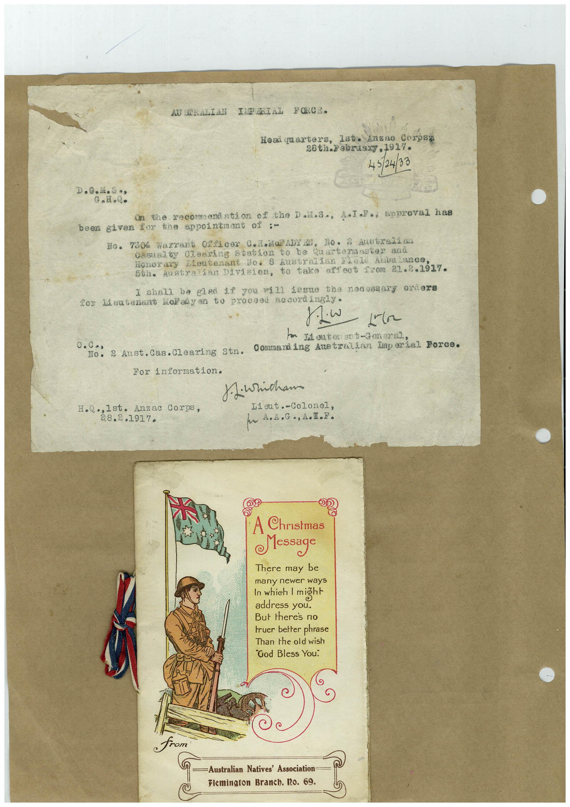

Book 1 · scan 011


Description
Transcription
Context
Review notes
Compare the machine draft with the scan. Handwriting and names need human review.
Artifacts
Edit the artifacts field in this note’s frontmatter to change these records. This summary is generated.
B01-S011-A01 — Invitation, Greeting card & Handwritten note — Book 1, scan 011
Types: Invitation, Greeting card, Handwritten note
Scope: Whole scanned page; individual items can be split out during review.
Caption: Not mapped yet.
Caption source: Not recorded yet.
Caption status: unmapped
Machine transcription
AU SERALIAN IMPARIAL FORCE. Heai quarters, Isto Anzao Corpse 28th-20lraa77,1917. 45/24/33 D.G..S•s G.H.Q. on the recomendation of the Doil.s., A•I.I., approval has been given for the appointmont of ;- No. 7304 Warrant 0281cer 0.ii/ADY AN, No. 2 Austrelian casualty Cleering Station be Quarternster and Honorary Lieutenant No. 8 Australian Flelo Anbalance 56. Australian Division, to take effect teon 21.2.1317. I shall be glad you will iesne the necessary orders for Meutenant Wellaiyen te proceed aocordingly• - 2r m 1 outer ant-Jon eral 0. Co, Conmand ing Australian Imperial Porce. 2 Aust. Cas. Clearing Stn. For information. jiwricham Lieut. -Colonel, H.Q .,Ist. Anzac Corps, 38.2.1917. A Christmas Message There may be many newer ways In which 1 miğht address you. But theres no truer better phrase Than the old wish "Cod Bless You. C from —Australian Natives' Association Flemington Branch. I2o. 69.